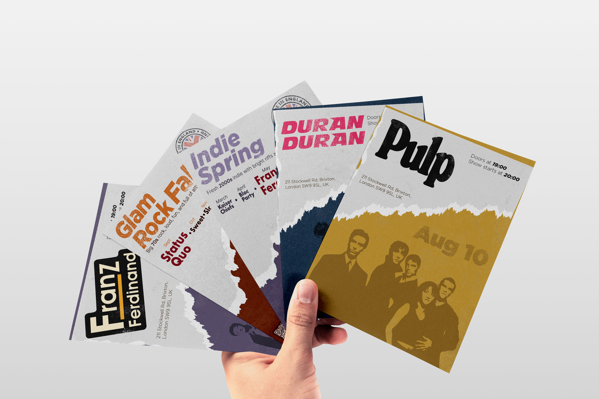
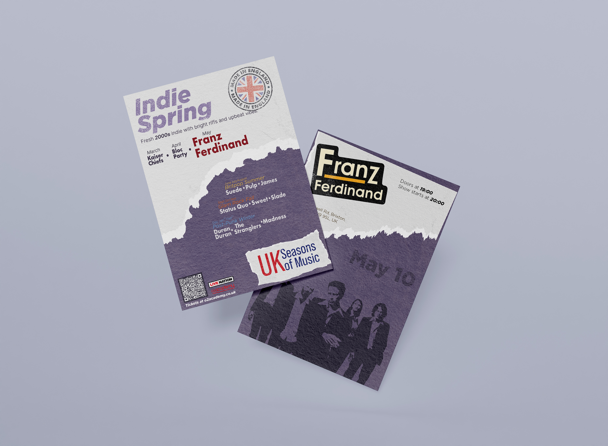
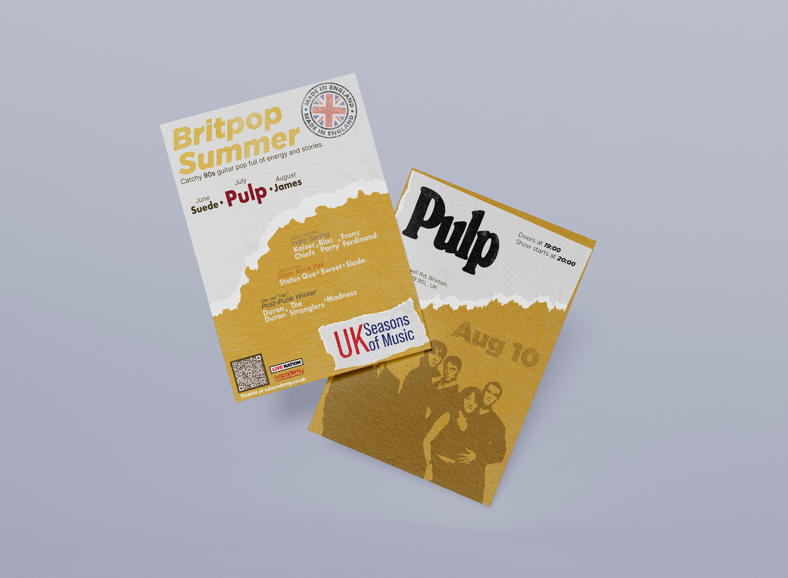

Lampara Sisters
El proyecto parte del estudio de la tipografía Sisters, diseñada por Laura Meseguer. El encargo: diseñar una lámpara inspirada directamente en los caracteres de Sisters, convirtiendo las formas tipográficas en un objeto físico funcional.
La pantalla está inspirada en la letra G de Sister One. El sistema de encaje vertical permite desmontar la pantalla.
Material: PLA impreso en 3D, palo metálico, casquillo y cable.
Tipografía VanGogh
Investigación en profundidad sobre la tipografía Sisters, publicada por Type-Ø-Tones. El estilo se inscribe en la tradición Stencil, con influencias Art Deco visibles en Sisters Four.
Aplicación en póster usando Sister Four en gran escala y Sister One en menor, con Sofia Condensed para los cuerpos de texto.
Herramientas: InDesign, Illustrator.


Diseño Gráfico y el Cine
Basado en la película Titanic, ambientada en 1911. El encargo: diseñar y fabricar un regalo de bienvenida para los pasajeros de primera clase del RMS Titanic, coherente con la estética Art Nouveau de la época.
Caja de madera cortada con láser con logo White Star Line grabado, interior forrado en terciopelo rojo.
Material: Madera, terciopelo rojo, corte láser.
Madrid es Jazz
Evento inmersivo de recorrido sensorial por el Paseo del Prado que conecta el jazz con la ciudad de Madrid a través de los cinco sentidos.
Desde Cibeles hasta Atocha, la ruta construye las capas del jazz a través de proyecciones, aromas, sonidos, texturas y gastronomía.
Herramientas: Illustrator, InDesign.
UK Seasons of Music
Identidad visual para un ciclo de 12 conciertos de música británica celebrando cuatro décadas: los años 70, 80, 90 y 2000, cada una asignada a una estación del año.
El lenguaje gráfico combina grunge, texturas de papel rasgado y vectores con paleta vintage.
Herramientas: Illustrator, InDesign.



